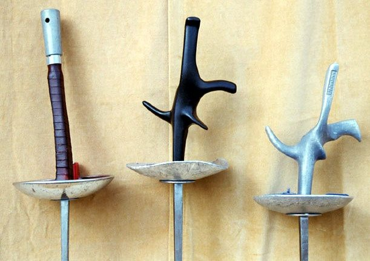
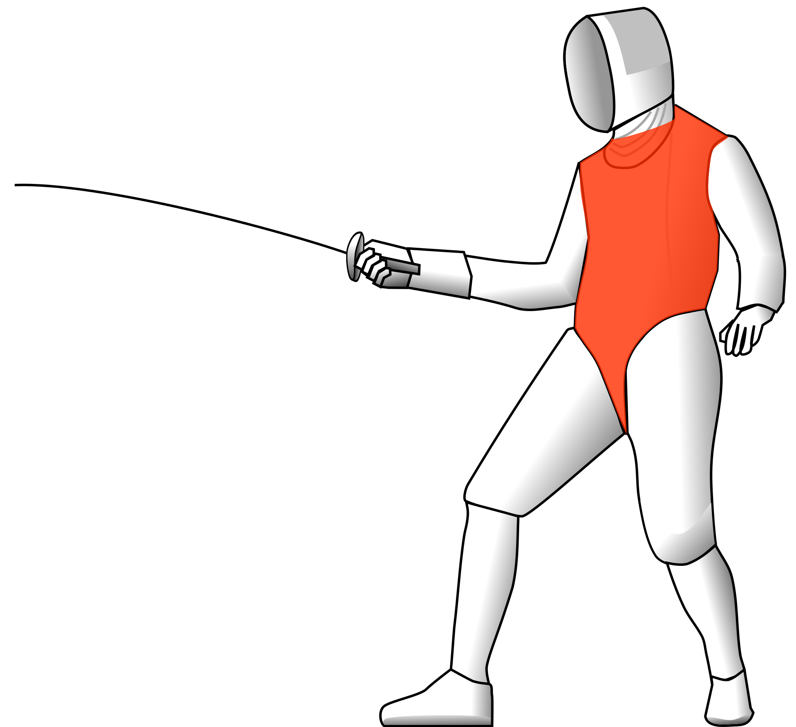

The Foil is one of the three weapons used in fencing. It is the lightest of all three, and has the most flexible blade. The foil evolved from the short court sword of the 17th and 18th centuries. It started a a lighter and more flexible weapon for the practice of fencing. Today, the foil is the most commonly used weapon in competitions.
The Blade

The foil blade is rectangular and tapered along its length. The maximum length of the blade must be 90cm, with the length of the entire weapon not exceeding 110cm. The guard of the foil is small and protects the fencers hand. The tip of the foil has an electric button assembly. This is used to electrically detect touches.
There are two types of grips commonly used, the traditional grip with an external pommel, or a more modern pistol grip that fixes the hand in a specific ergonomic position.
Rules of Foil

The foil is used as a thrusting weapon only. This means points are only scored when the tip of the blade comes into contact with the opponents target area. In foil fencing, the valid target areas are only the torso. A touch on any other part of the body (eg. the arms) will be registered as an off-target touch. Touches made to off-target areas do not count for points, but do stop and reset play.
Since there is a restriction on valid target area, foil fencers wear a lamé, which is an electrically conductive jacket to detect valid touches.
Foil fencing adopts Priority Rules. This means that fencers need to obtain the priority (or right of way) for their touches to count for points. The basic rules are whoever initiates an attack first obtains priority. However, if the defender sucessfully parries their opponents attack, they priority shifts and they can go for a riposte.